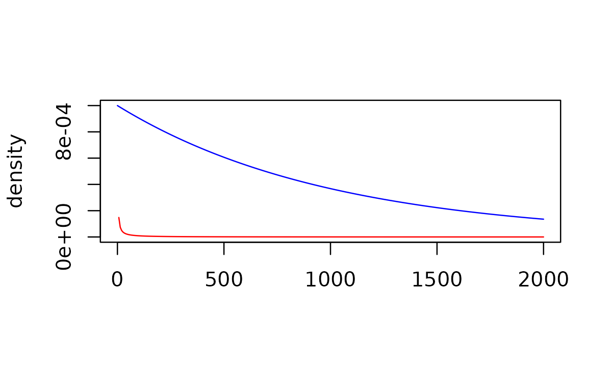

3. Specifying prior distributions
Matt Secrest and Isaac Gravestock
prior_distributions.Rmd
library(psborrow2)
# Loading required package: cmdstanr
# CmdStan path set to: /root/.cmdstan/cmdstan-2.33.1
# This is cmdstanr version 0.6.1
# - CmdStanR documentation and vignettes: mc-stan.org/cmdstanr
# - CmdStan path: /root/.cmdstan/cmdstan-2.33.1
# - CmdStan version: 2.33.1In this vignette, you’ll learn how to specify prior distributions in
psborrow2.
Specifying prior distributions
Because psborrow2 creates fully-parametrized Bayesian
models, proper prior distributions on all parameters must be specified.
Prior distributions are needed for several parameters, depending on the analysis:
- beta coefficients (e.g. log hazard ratios or log odds ratios) for
all coefficients, passed to
add_covariates() - ancillary parameters for outcome distributions, such as the shape
parameter for the Weibull survival distribution, passed to
weib_ph_surv_dist() - log effect estimates (e.g. hazard ratios or odds ratios) for the
primary contrast between treatments, passed to
treatment_details() - baseline outcome rates or odds, passed to
borrowing_details() - the hyperprior on the commensurability parameter for Bayesian
dynamic borrowing (BDB), passed to
borrowing_details()
See the documentation of these functions for more information.
Types of prior distributions
The currently supported prior distributions are created with the constructors below:
bernoulli_prior(theta)beta_prior(alpha, beta)cauchy_prior(mu, sigma)exponential_prior(beta)gamma_prior(alpha, beta)normal_prior(mu, sigma)poisson_prior(lambda)uniform_prior(alpha, beta)
For example, we can create an uninformative normal distribution by specifying a normal prior centered around 0 with a very large standard deviation:
uninformative_normal <- normal_prior(0, 10000)
uninformative_normal
# Normal Distribution
# Parameters:
# Stan R Value
# mu mean 0
# sigma sd 10000See the documentation for the respective functions above for additional information.
Visualizing prior distributions
You may sometimes find it useful to visualize prior distributions. In
these scenarios, you can call plot() on the prior object to
visualize the distribution:
plot(uninformative_normal)plot() chooses the default axes for you, but you can
change these to make differences more obvious. Let’s compare a
conservative gamma(0.001, 0.001) hyperprior distribution on
the commensurability parameter tau to an more aggressive
gamma(1, 0.001) distribution with greater density at higher
values of tau (which will lead to more borrowing in a BDB
analysis):
conservative_tau <- gamma_prior(0.001, 0.001)
aggressive_tau <- gamma_prior(1, 0.001)
plot(aggressive_tau, xlim = c(0, 2000), col = "blue", ylim = c(0, 1e-03))
plot(conservative_tau, xlim = c(0, 2000), col = "red", add = TRUE)